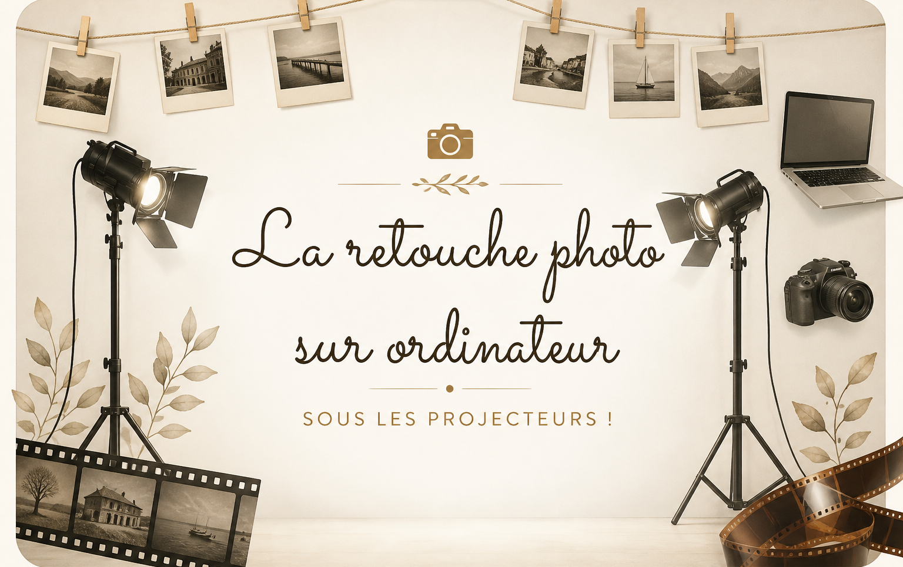

01 — ATELIERS DE RETOUCHE PHOTO
La retouche photo sur ordinateur
Des ateliers sur ordinateur pour apprendre à utiliser les logiciels de retouche, de la prise en main des outils aux techniques plus avancées. Chacun progresse à son rythme.
Découvrir les ateliers